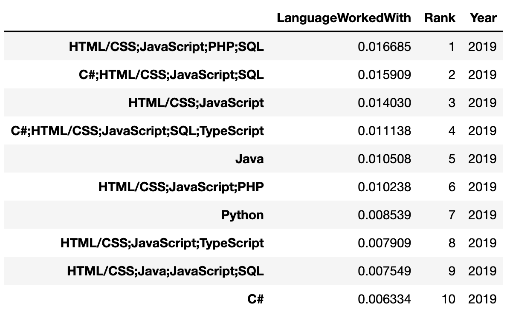

Stack Overflow Data - 2017 Survey
You might have different questions about the 2017 StackOverflow survey data than I looked at earlier in the course. If you choose this dataset, you can not use the same questions that were analyzed earlier in the classroom.
Alternatively, if you felt pretty confident with the techniques in this lesson, you might be looking to push the envelope. In this case, you may choose to retrieve all of the Stack Overflow Survey - Multiple Years results. From this data, you could analyze trends over time.
- What languages were most popular in each year?
- What databases were most popular in each year?
- What countries were most popular in each year?
What languages were most popular in each year?
The following tables show the top 10 programming languages in 2017, 2018, 2019, and 2020
respectively.




The following tables and bar charts show the ranks of the programming languages
Python and Java in terms of percentages of users.


It can be seen from the above tables and bar charts that Python becomes
more and more polular over time, while the popularity of Java decreases
over time.